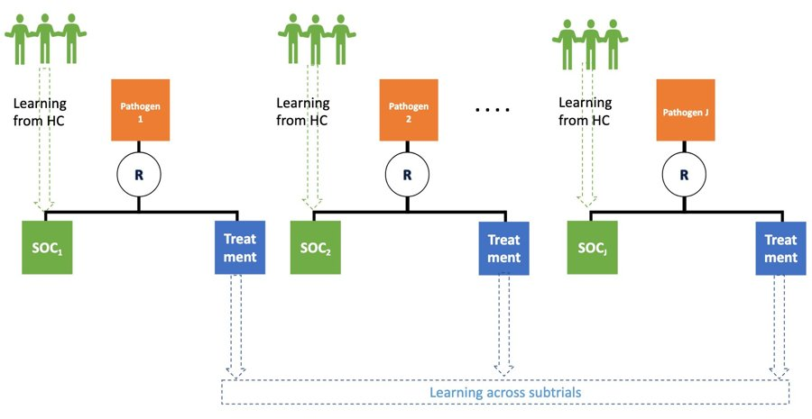
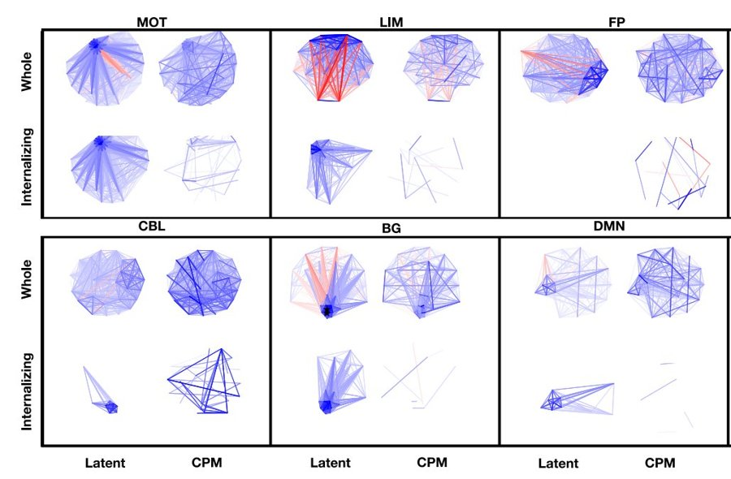
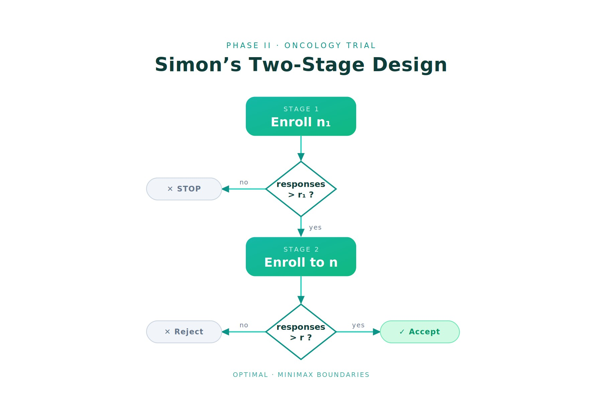

For an up-to-date list of publications, see my Google Scholar page.

Bayesian randomized basket trial design: a case study from the ultra-rare invasive mold infections. Biometrics, 82(1), ujag001.

Latent space-based network analysis for brain–behavior linking in neuroimaging. Nature Methods, 23, 225–235.

UnplanSimon: Methods for Managing Enrollment Deviation in Simon's Two-Stage Design. CRAN R package.
10k+ downloads on CRAN